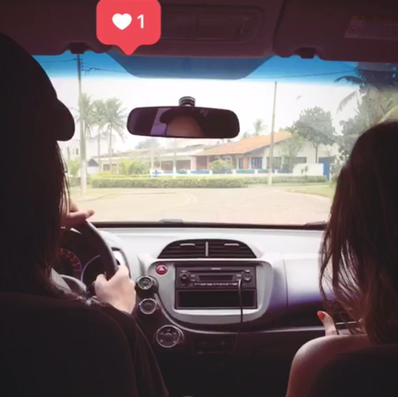
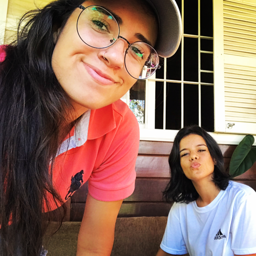

Há quase dois anos atrás eu jamais poderia imaginar que um dia eu poderia ser capaz de encontrar alguém que me fizesse amar incondicionalmente. Passei anos da minha vida, entrando e saindo das vidas das pessoas, cada vez mais desacreditada sentimento "amor".
Me apaixonei por você desde a primeira vez que te vi. E seria quase impossivel olhar pra você e isso não acontecer. Observei cada detalhe seu. Mas o que o que me fisgou foi o jeito que você olhava.
Quem diria né? Que um dia você se tornaria minha e faria eu me sentir desse jeito, como se eu estivesse dançando no escuro, com você entre meus braços e sentindo a areia sob os meus pés.
Depois que eu te conheci tudo na minha vida mudou. Minha rotina, que passou a se ajustar a sua. Meus dias livres que passaram a se tornar o dias de te ver. A grana que sobrava virou a grana pra te levar pra sair. Os novos filmes lançados na Netflix que eu tinha ansiedade para assisitr e hoje eu espero estar com você para ver. E até meus planos, que antes só me cabia e hoje não existem se você não estiver neles.

É como se a vida toda eu tivesse procurado por você, sem nem me dar conta, sem nem desconfiar que o grande amor da minha vida estava tão perto de mim esse tempo todo. Praticamente debaixo do meu nariz.
Sabe aquela frase "se ela pular no buraco, você também pula?" que toda mãe faz quando você é criança?, sabe aquela frase do Titanic "se você pular, eu pulo!" que o Jack disse para Rose? É essa sensação que o nosso relacionamento me traz. É o tempo todo juntas, preocupando uma com a outra, ajudando, aconselhando, acolhendo e amando. E hoje, com todas as palavras eu respondo a minha mãe anos depois: sim, eu pulo.
Nossa historia não foi premeditada. O acaso aconteceu e é por isso que eu acredito que as melhores coisas da vida são assim. Me aconteceu você.
Me apaixonar por você foi completamente um acidente. Nossa história foi de um "mas isso não é uma pergunta" no Instagram, para um "Casa logo comigo" no Whatsapp, em questão de pouquissimo tempo.
Pode até parecer exagero, mas eu sabia que era você. Eu sabia que era o seu beijo que eu queria todos os dias. Eu sabia que era do seu abraço que eu precisava. Que era do seu colo que me fazia sentir em casa. Me sinto desprotegida só de pensar estar sem você ao meu lado.
Não é "é como se você fosse meu porto seguro", por que você É o meu porto seguro. Você é o que me dá vontade de batalhar todos os dias pra ser alguém melhor. É pra você e por você que quero ter um futuro espetacular, mas só se você estiver nele pra eu poder te aplaudir de pé em todas as suas conquistas.
Você entrou na minha vida pra provar que eu posso sim ser amada mesmo com todos os meus defeitos. Você me ama de um jeito tão lindo e puro que eu torço pra alguém sentir o que eu sinto vindo de você. Você entrou na minha vida pra me ensinar tantas coisas, pra se jogar nesse mundão do meu lado e me mostrar que juntas podemos tudo. Você me fez entender que eu consigo sim ser menos insensivel e saber lidar com o próximo, sem julgamentos. Você me ensinou a olhar com mais empatia, com mais ternura, com mais carinho para tudo.
Somos duas pessoas com defeitos e qualidades diferentes, se encaixando de uma forma perfeita e natural pra seguir a vida juntas.
Nós vibramos a conquista uma da outra, mesmo que não seja de muita aprovação.
Eu escolhi você, mesmo não tendo a opção de escolha por eu já estar totalmente caída por quem você é.
A melhor parte de namorar você, é que antes de você se tornar oficialmente minha namorada, você já era minha companheira. Você é a pessoa que mais me faz feliz nesse mundo. É quem eu quero abraçar quando estou mega feliz e também quando estou nos meus piores dias. Você sabe tudo de mim , até mesmo as coisas eu nem eu sei! Quando passo alguns dias sem te ver, é como se já tivesse se passado um ano, de tanta saudades que aperta o peito.
Com você eu descobri tudo de novo. Amar, ser menos impaciente, cumplicidade, fidelidade, e descobri também niveis de felicidade que eu jamais poderia imaginar que iria alcançar um dia. Descobri que o que eu sinto por você é muito além do carnal. é um encontro de almas. De almas preparadas para se encontrar, no momento certo, no lugar certo, com as pessoas certas e nos segundo e milésimos certos.
Você é a minha gargalhada, meu coração acelerado, meus melhores dias, meus momentos mais intensos, é aquela cerveja gelada ao final de um dia quente, minha luz, meu sol, meu domingo à tarde na praia, minha lua cheia que ilumina tudo e inclusive o meu coração.
Eu te amo e te amarei para sempre. Feliz dia dos namorados!